Paula Jaraquemada 309 · La Reina
Townhouse
La Reina

Edificio de departamentos dúplex con jardín o terraza panorámica, desarrollado en La Reina.
- Ubicación
- Paula Jaraquemada 309, La Reina
- Año
- 2017
- Tipología
- Edificio de departamentos dúplex con jardín o terraza panorámica
- Superficie
- 3.094 m²
- Unidades
- 18 viviendas
- Mandante
- IKnow Inmobiliaria
- Arquitectura
- Franulic y Asociados
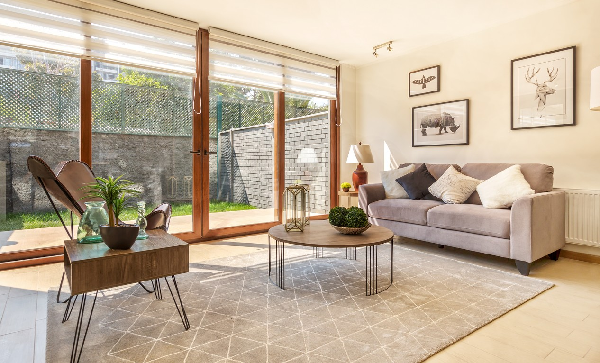
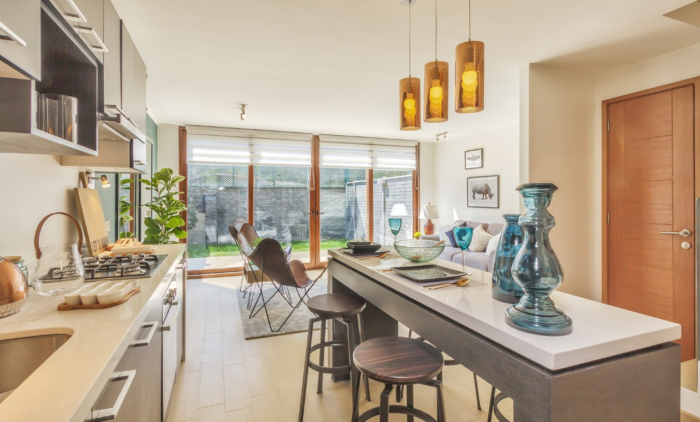
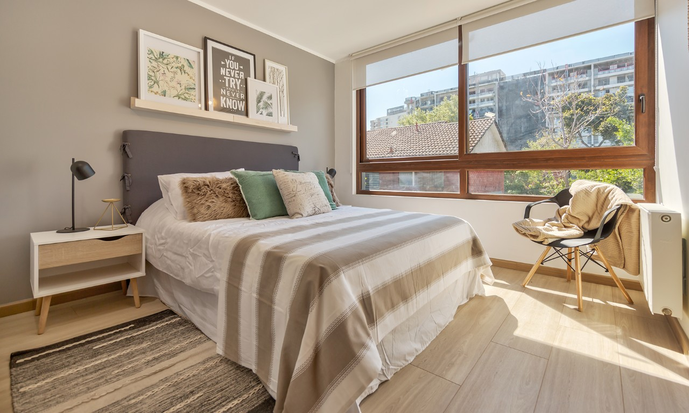
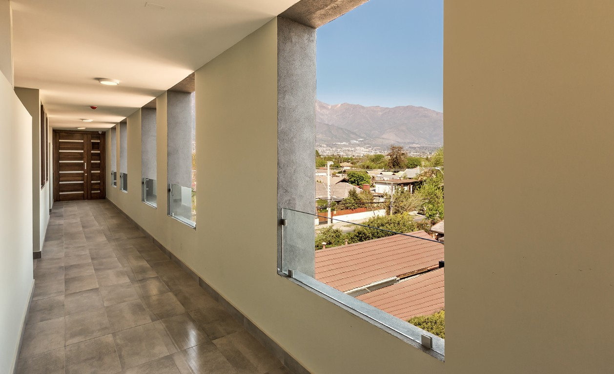
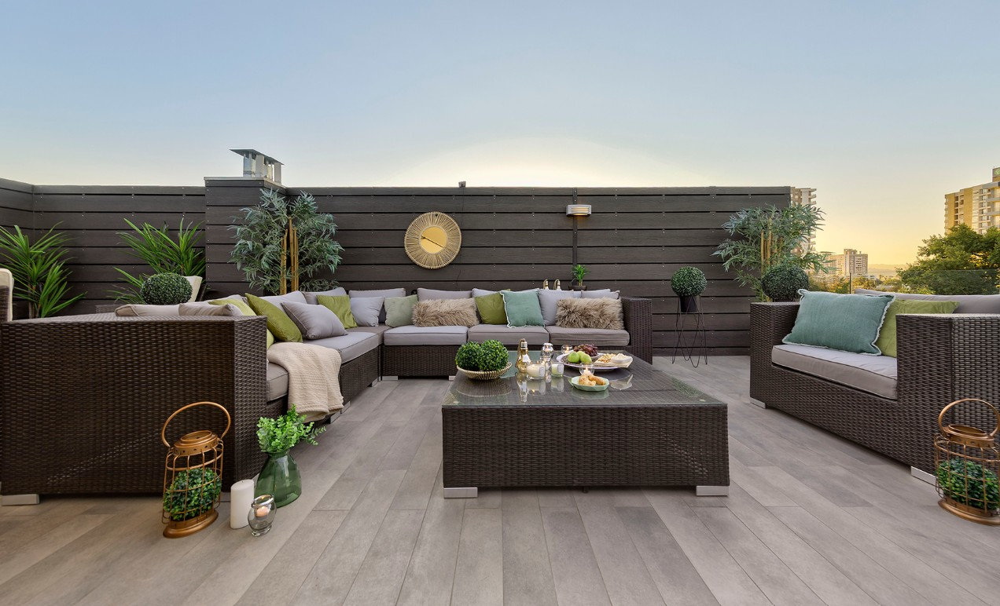
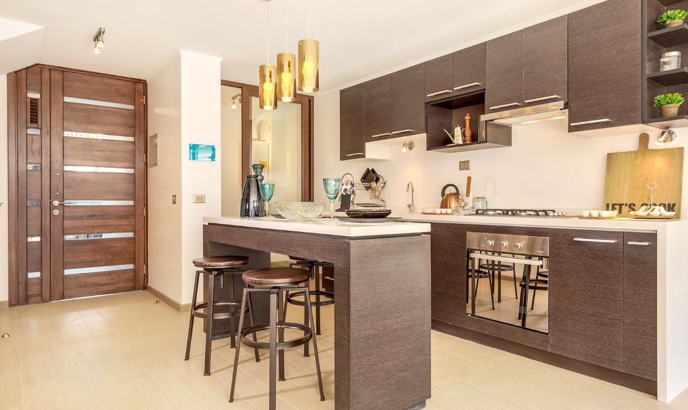
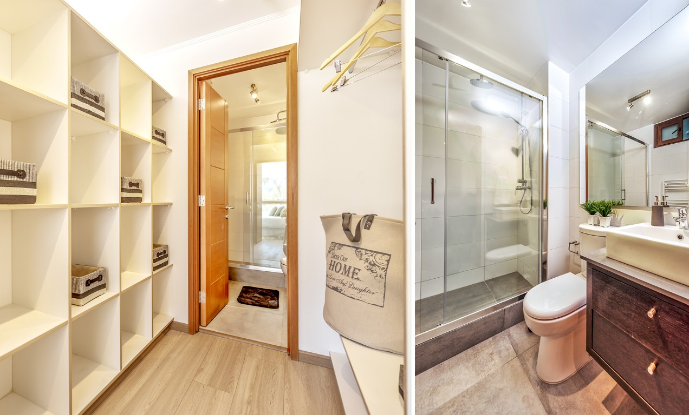
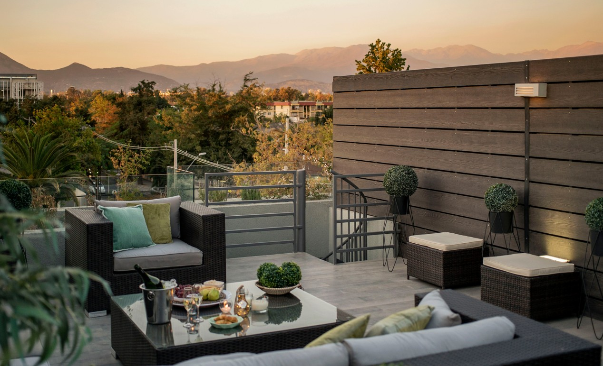
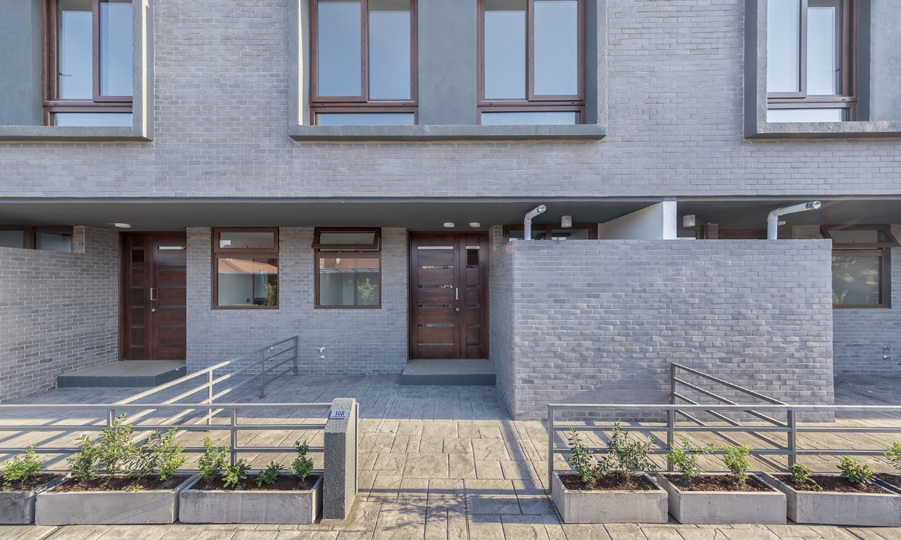
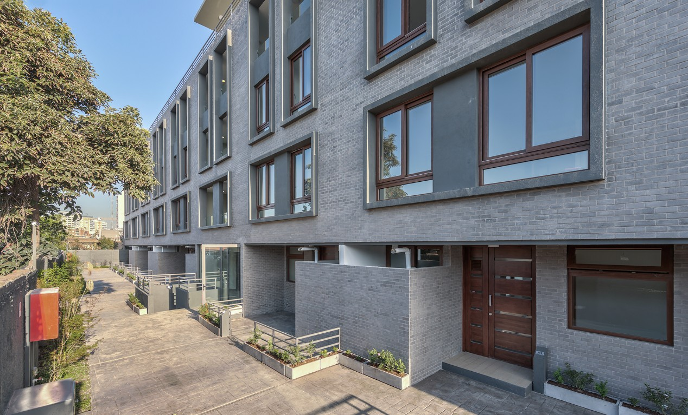
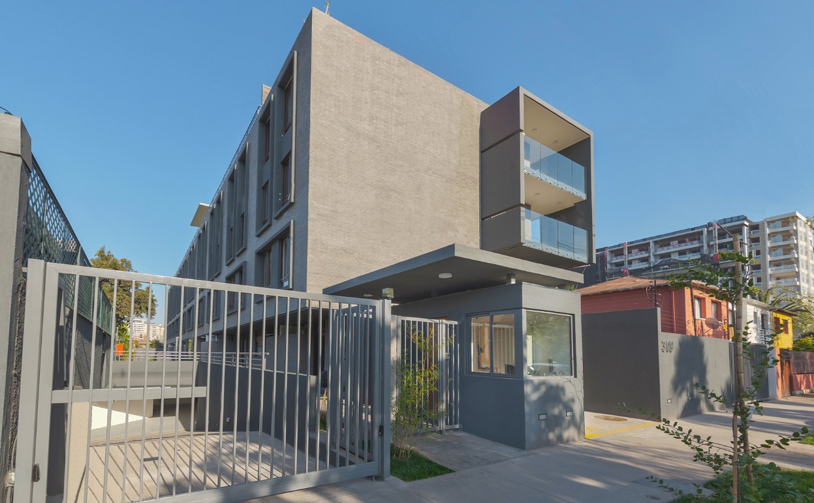